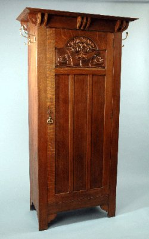
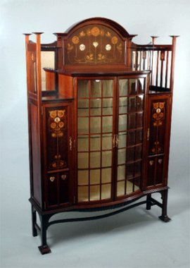
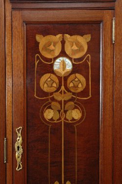
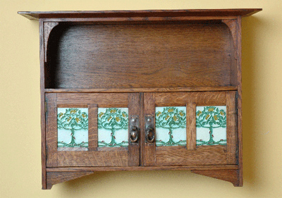
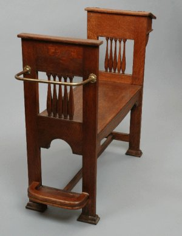

Collecting Shapland and Petter.

For collectors of Shapland and Petter, there are now much stronger grounds upon which attribution can be made and a more coherent house style is emerging. The powerful and comprehensive influence of a single designer, William Cowie has also been established from his signed drawings discovered by Mark Golding in 2005. The increasing archive of information gives a coherent evidence base confirming the authenticity of Shapland and Petter pieces. This, in contrast to Liberty & Co for example, where a wide range of pieces of variable quality and design were supplied from different companies, (including Liberty’s own workshops) and then given the Liberty & Co label.
Still some bargains.

For the serious collector or for people who might simply wish to have just one or two pieces, the range produced by Shapland and Petter provides the ideal opportunity. A precondition for establishing a broad base of collectors is that there must be a large number of pieces in circulation or potentially available. The enormous range of pieces produced by Shapland and Petter and their very wide geographical distribution networks create exciting prospects for collectors, and there has been a steady trickle of original and previously unseen pieces coming onto the market in recent years. There are still many auction houses which have not purchased the book and as consequence Shapland and Petter pieces are often not identified as such and may be bought at auction much below market value.
Identifying Shapland and Petter.
From the research undertaken for 'Shapland and Petter of Barnstable: Arts and Crafts Furniture', some principles and evidence are now available to assist collectors in identifying Shapland and Petter pieces. Whilst there is full disclosure and explanation in the book about catalogues, and registration of pieces, and no ‘trade secrets’ held back, this still leaves much scope for further research.

Characteristics of Shapland and Petter Arts and Crafts design include square moulded spindles, set in galleries or rows, geometric arches, moulded vertical columns with bud shapes. The wood used was invariably of high quality, oak in particular showing medullar rays from cross ‘quarter cut’ sections and the distinct orange and yellow colouring of oak used in many pieces gives a distinctive character to Shapland and Petter design. Perhaps the most characteristic feature is the decoration of pieces with designs depicting flowers, fruit and birds. Mottoes were also frequently used and the book lists several of the more popular, giving the origins of quotations where these have been traced. Decorative techniques included inset repoussé copper panels, high quality marquetry and intarsia work with coloured and rare woods, shell and metalwork inlay. The use of enamels was also fairly common with enamelled roundels, hearts inset in wood and enamelling on locks and rarely enamels applied to copper panels to enhance the design. Ceramic discs made by Pilkingtons were used in designs also and a wide range of decorative tiles from a variety of ‘artistic’ potteries which included Medmenham were used.

SP&B Monograms and Marks.
By far the most common mark for Shapland and Petter is the impressed stamp of SP&B in a triangular shape on locks, which denotes Shapland and Petter of Barnstaple. There are no known examples of this stamp on other parts of the metalwork or wood, as far as the author is aware, the mark appears only on the brass locks fitted to furniture. Whilst this mark makes attribution fairly straight forward, there are numerous examples of unmarked locks and the possible reasons for this include:-
-
Small locks on cabinets and smokers cabinets are often unmarked.
-
New locks have been put on by owners, where none were intended in the design.
-
Locks have been changed during the last 100 years because of lost keys.
-
Lock have been removed to ‘enhance’ other pieces of furniture
-
Locks were not stamped at the works .
In the case of the latter, locks for the more elaborate pieces, which are combined with handles to turn the latch, i.e. for hall robes and wardrobes have been observed to be unmarked. No apparent reason for this exists, but one could speculate that they were missed, or deliberately left unmarked at the instruction of the customer or retailer.
Stamped Numbers. Registered Designs. Rd numbers.
A number of companies stamped identification on furniture which they made, Gillows, Waring and Gillows Heal and sons, Liberty and Co for example, frequently stamped the company name and companies such as Harris Lebus Ltd stamped HLL often marked with a Registered Design Number. RD numbers relate to the Register of Designs and are traceable through the Public Records Office at Kew in London.

Though there are several entries in the Shapland and Petter cash book around 1900 to 1902 for Registration of designs ( cost 6 shillings) to date only 2 pieces of furniture produced by Shapland and Petter have been found to bear registration numbers; a hall seat, illustrated, and a music cabinet. The hall seat bears an ivorine label with registration number and has been identified in the Register of Designs as registered in 1902